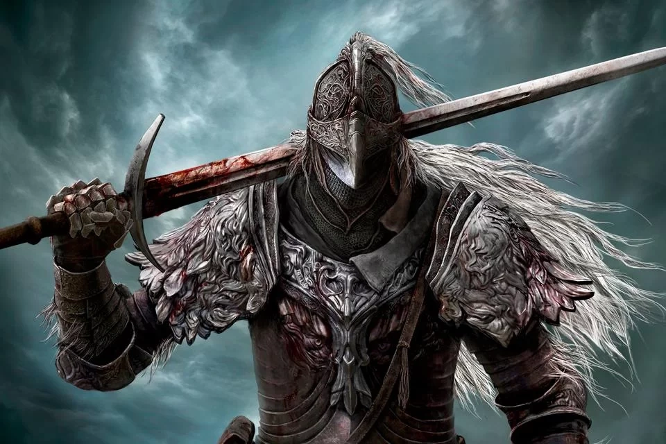
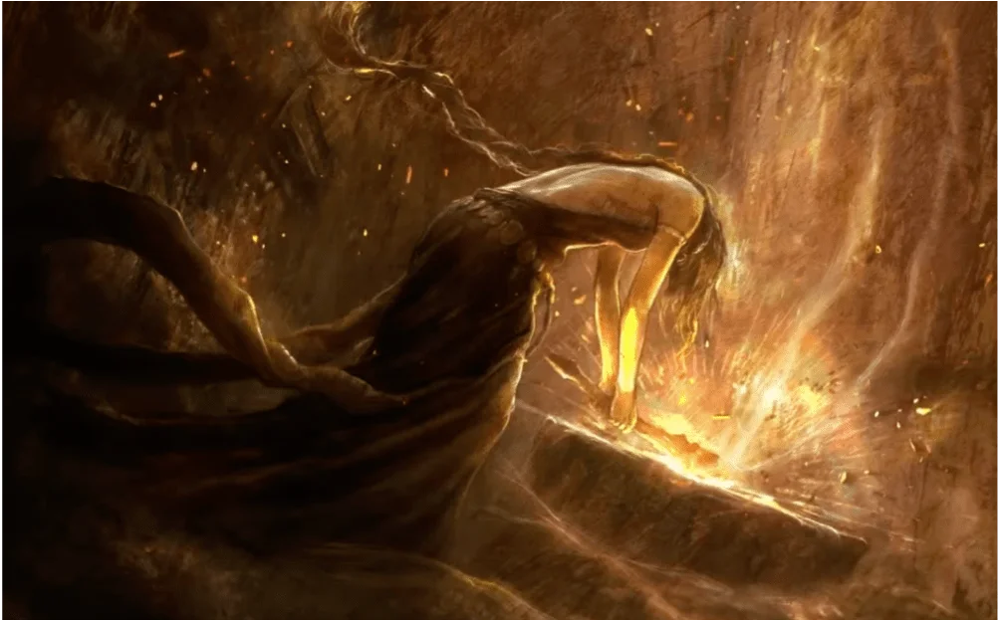
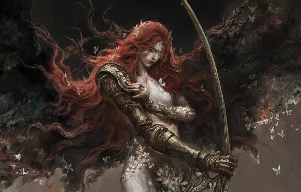
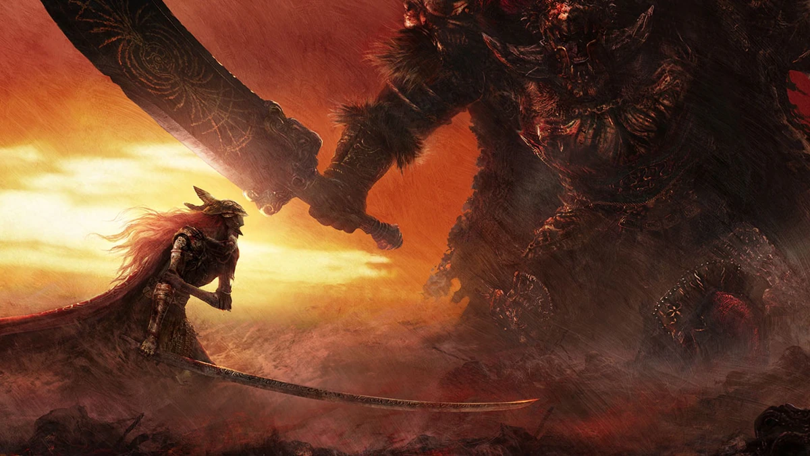
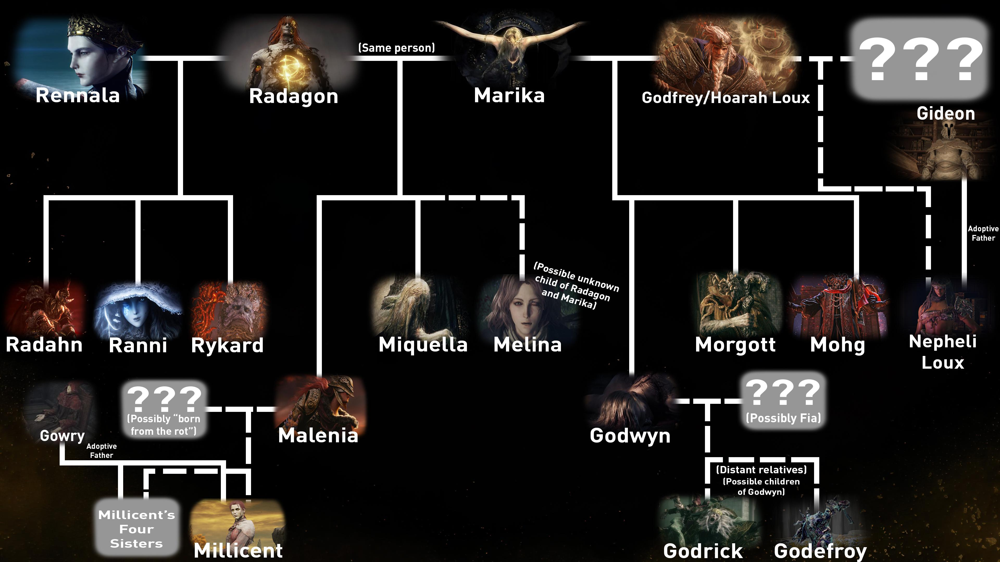
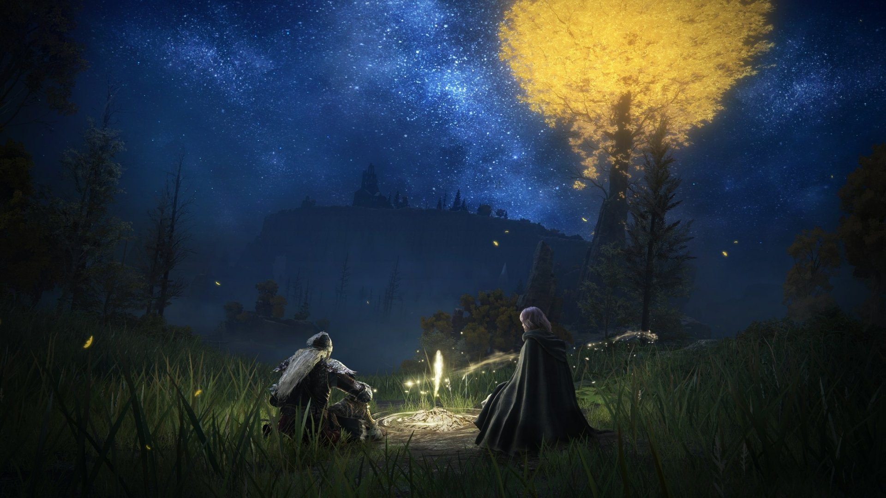
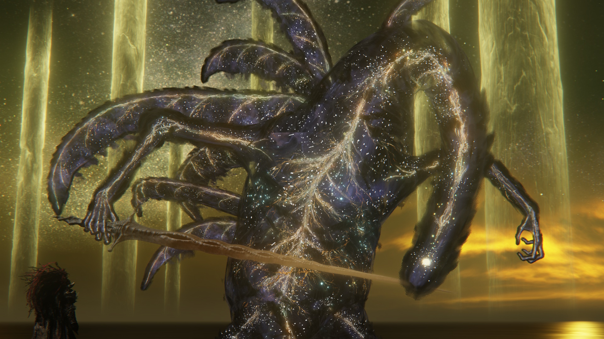

O MUNDO DE ELDEN RING: AS TERRAS INTERMÉDIAS
As Terras Intermédias são um mundo governado por leis cósmicas manifestadas através de um artefato divino: o Elden Ring. Esse anel não é físico como um anel comum, mas sim um conjunto de runas que define:
- a ordem da vida
- a morte
- o destino
- o poder
- a própria realidade
O Elden Ring é controlado por uma entidade superior chamada Grande Vontade (Greater Will), um deus exterior que governa à distância.
MARIKA, A ETERNA

Deusa da Ordem Áurea, Portadora do Elden Ring
Marika não nasceu deusa. Ela foi escolhida. E essa distinção, tão sutil quanto cruel, define toda a sua tragédia. Elevada pela Grande Vontade, tornou-se o receptáculo do Elden Ring e, por consequência, o próprio pilar da realidade. Onde ela caminhava, a Ordem se firmava; onde sua sombra caía, o caos recuava. Seu corpo tornou-se sagrado, mas sua vontade jamais deixou de ser humana.
Foi Marika quem decretou que a morte era um erro. Ao arrancar a Runa da Morte do Elden Ring, ela ofereceu eternidade aos deuses e aos seus descendentes. Contudo, o preço foi invisível no início. A vida perdeu o alívio do fim, e o mundo passou a existir em um eterno agora, onde nada se encerrava de fato. O sofrimento deixou de ser passageiro. A decadência tornou-se permanente.
Mesmo assim, Marika reinou sem contestação. Sua fé na Ordem Áurea parecia absoluta — ao menos até o dia em que a morte, que ela tentara apagar da existência, retornou na forma mais cruel possível.
GODFREY, PRIMEIRO LORDE PRÍSTINO

Hoarah Loux, o Guerreiro Carmesim
Antes de ser rei, Godfrey era Hoarah Loux, um homem moldado apenas pela guerra. Selvagem, indomável, violento como a própria natureza. Marika o escolheu não por nobreza, mas por necessidade. Ele seria a lâmina da Ordem Áurea, o instrumento pelo qual o mundo seria conquistado e silenciado.
Como Primeiro Lorde Prístino, Godfrey liderou campanhas sangrentas que definiram a história das Terras Intermédias. Gigantes caíram. Dragões foram humilhados. Antigas civilizações desapareceram sob o peso de seu machado. Cada vitória reforçava a Ordem, mas também esvaziava o propósito de Godfrey. Quando a última batalha terminou e não restaram inimigos dignos, a Graça o abandonou.
Marika, impiedosa e estratégica, retirou sua bênção. Godfrey foi despojado do trono e exilado, forçado a abandonar sua identidade divina e retornar ao que sempre fora: Hoarah Loux, um guerreiro sem causa. Junto dele partiram seus soldados, todos marcados pela mesma maldição. Eles passaram a ser chamados de Maculados, condenados a viver e morrer longe da luz dourada.
Mas Marika não os exilou por ódio. Ela os estava preparando.
OS MACULADOS
Os Destituídos da Graça
Os Maculados vagaram por terras estrangeiras, vivendo vidas ordinárias, sofrendo mortes sem glória. A Graça os havia abandonado, mas não esquecido. Em silêncio, Marika aguardava o momento em que o mundo quebraria. E quando esse dia chegasse, seriam eles — e não os deuses — que teriam força para decidir o futuro.
Você é um deles.
RANNI, A BRUXA

Filha da Lua Cheia, A Que Rejeitou o Destino
Ranni nasceu de linhagem divina, mas nunca aceitou o fardo que lhe foi imposto. Filha de Marika e criada sob a influência da Grande Vontade, ela percebeu algo que poucos ousaram sequer pensar: os deuses não governavam para proteger, mas para controlar. A Ordem Áurea não era harmonia; era uma prisão cósmica.
Para se libertar, Ranni precisava morrer — mas apenas parcialmente. Na Noite das Facas Negras, ela conspirou com assassinas invisíveis, forjando lâminas imbuídas com fragmentos da Runa da Morte. Enquanto seu corpo era sacrificado, sua alma escapava da influência da Grande Vontade. O preço, porém, foi devastador.
GODWYN, O DOURADO

Príncipe da Morte
Godwyn era tudo o que a Ordem Áurea celebrava. Filho amado de Marika, herói venerado, símbolo da perfeição divina. Sua morte não foi apenas um assassinato; foi uma blasfêmia. Quando as Facas Negras o atingiram, Godwyn não morreu por completo. Sua alma foi destruída, mas seu corpo permaneceu vivo, condenado a uma existência grotesca e antinatural.
Assim nasceu o Príncipe da Morte. A corrupção de seu cadáver espalhou-se pelas raízes da Árvore Áurea, infectando o próprio fundamento da Ordem. A morte, antes negada, retornou como algo distorcido, incompleto, impossível de conter.
Foi nesse momento que Marika compreendeu seu erro.
A QUEBRA DO ELDEN RING
Devastada pela perda de Godwyn e consciente da mentira que sustentava o mundo, Marika fez o impensável. Ela quebrou o Elden Ring. Não em um gesto de fúria cega, mas em um ato desesperado de rebelião contra a própria Grande Vontade. A realidade se fragmentou. As leis que mantinham o mundo coeso se estilhaçaram.
Como punição, Marika foi aprisionada dentro da Árvore Áurea. Seu outro eu emergiu para tentar conter o desastre.
RADAGON, O REI CONSORTE

O Outro de Marika
Radagon sempre fora um mistério. Guerreiro devoto, marido fiel, símbolo da Ordem. Apenas após a quebra do Elden Ring é revelada a verdade mais perturbadora: Radagon e Marika são a mesma entidade. Dois aspectos de um único ser, em conflito eterno entre obediência e rebelião.
Radagon tentou restaurar o Elden Ring, remendar a Ordem despedaçada, mas falhou. A guerra era inevitável.
Malenia, a Espada da Devoção
A Invicta que Carregava a Ruína
Malenia nasceu já em guerra. Não contra o mundo, mas contra o próprio corpo. A Podridão Escarlate habitava sua carne como um deus estrangeiro, corroendo ossos, músculos e nervos desde o primeiro fôlego. Cada passo era uma dor calculada. Cada movimento, uma concessão. Ainda assim, ela jamais pediu piedade. Em vez disso, transformou a resistência em disciplina, e a disciplina em perfeição.
Criada ao lado de Miquella, seu irmão gêmeo, Malenia jamais precisou de um trono. Miquella era o sonhador, o arquiteto de um futuro impossível; ela era a lâmina que garantiria que esse futuro jamais fosse arrancado à força. Sua devoção não era cega — era absoluta. Tudo o que fazia, fazia por ele. Tudo o que suportava, suportava em silêncio.
A Espada de Miquella aprendeu a lutar como quem dança à beira do abismo. Seus golpes não eram movidos por fúria, mas por controle. Cada inimigo derrotado era uma afirmação contra a podridão que a consumia. Cada vitória adiava o inevitável. E enquanto vencia, acreditava que podia continuar vencendo para sempre.
Mas a eternidade cobra seu preço.
Conforme a Guerra da Estilhaçamento se aproximava, Malenia sentia a pressão aumentar. O mundo se desfazia, e Miquella, seu propósito, havia desaparecido em seu próprio sonho. Restava-lhe apenas a promessa de jamais cair. Jamais perder. Era um juramento feito não aos deuses, mas a si mesma.
Quando marchou para Caelid, Malenia não buscava glória. Buscava preservar aquilo que ainda podia ser salvo. No fundo, porém, ela sabia. Se a lâmina falhasse, não restaria escolha além de libertar o que sempre manteve selado.
E essa era a única derrota que ela jamais admitiria.
Radahn, o General que Prendeu as Estrelas

O Último Campeão de uma Era Perdida
Radahn nasceu grande, mas escolheu ser maior. Filho de Rennala, herdeiro da magia lunar, e de Radagon, pilar da Ordem Áurea, ele cresceu dividido entre dois mundos. Em vez de rejeitar essa divisão, Radahn a transformou em força. Ele não buscava equilíbrio — buscava permanência.
Desde jovem, idolatrava Godfrey, o Primeiro Lorde Prístino. Via nele o ideal de força pura, desprovida de engano ou manipulação divina. Radahn queria ser como ele: um general que moldava o mundo com as próprias mãos. Seu corpo cresceu além dos limites humanos, e para sustentá-lo, ele dominou a magia gravitacional, não para flutuar como um deus, mas para permanecer fiel àquilo que amava.
Mesmo quando se tornou colossal, Radahn recusou-se a abandonar seu cavalo. Um gesto simples, quase infantil, que revelava sua natureza mais profunda: ele se recusava a deixar o passado para trás. Enquanto pudesse montar, ainda seria quem sempre fora.
Radahn não lutava apenas por poder. Lutava contra o tempo. Ao deter as estrelas, ele congelou o próprio destino das Terras Intermédias, acreditando que, se o mundo não avançasse, nada precisaria terminar. Era um ato de força e de desespero, mascarado como heroísmo.
Quando a guerra chegou, Radahn não recuou. Ele aguardou. Sabia que alguém viria desafiá-lo. Sabia que aquela batalha definiria tudo. E, no entanto, jamais considerou a derrota. Para Radahn, perder não significava morrer — significava permitir que o mundo seguisse sem ele.
Na vastidão de Caelid, sob um céu imóvel, o General que Prendeu as Estrelas aguardou sua oponente, inconsciente de que aquela luta não encerraria uma era.
Apenas a condenaria a apodrecer.
A Batalha de Aeonia
Malenia, a Espada de Miquella vs. Radahn, o Flagelo das Estrelas
Antes que a Guerra da Estilhaçamento consumisse tudo, houve um momento em que o mundo quase terminou de uma só vez.
Malenia marchou para o leste não por ambição, nem por desejo de domínio, mas por devoção absoluta. Ela era a Espada de Miquella, criada não para reinar, mas para proteger. Desde o nascimento, carregava dentro de si a podridão escarlate, uma divindade estrangeira que a corroía lentamente. Ainda assim, jamais conhecera a derrota. Sua lâmina era perfeita, e sua disciplina, inquebrável. Cada golpe era uma dança precisa entre controle e ruína.
Radahn a aguardava nas planícies de Caelid.
Conhecido como o Flagelo das Estrelas, Radahn era o maior general de sua era. Filho de Rennala e Radagon, ele havia aprendido a magia gravitacional não para elevar-se, mas para permanecer fiel ao passado. Mesmo com um corpo gigantesco, sustentava-se para poder continuar montando seu cavalo, um gesto simples que revelava mais humanidade do que todos os títulos que carregava. Radahn havia detido o movimento das estrelas, congelando o próprio destino do mundo, não por tirania, mas por força de vontade pura.
Quando Malenia e Radahn se encontraram, não houve palavras.
A batalha que se seguiu não foi uma guerra, mas um cataclismo. A lâmina de Malenia cortava com graça letal, enquanto Radahn respondia com a força de um cometa em queda. O chão se partia sob seus passos. O céu tremia com a colisão de aço e gravidade. Nenhum dos dois recuava. Nenhum aceitava a derrota.
Por um instante que pareceu eterno, o mundo segurou o fôlego.
Foi então que Malenia quebrou seu próprio juramento. À beira da derrota, ela libertou aquilo que sempre manteve selado. A Podridão Escarlate floresceu como uma flor maldita, espalhando-se por Aeonia e transformando Caelid em um deserto apodrecido. A explosão não foi uma vitória — foi uma confissão de desespero.
Radahn sobreviveu, mas perdeu a si mesmo. Sua mente foi consumida, reduzida a um eco faminto que vagava pelas dunas, devorando cadáveres enquanto ainda segurava as estrelas no céu. Malenia caiu inconsciente, carregada para longe por seus cavaleiros, sem jamais saber que aquele combate não teve vencedor.
A batalha terminou sem triunfo. Apenas consequências.
Aeonia permaneceu como uma cicatriz aberta no mundo, prova viva de que os semideuses, mesmo em sua grandeza, eram incapazes de governar aquilo que haviam destruído.
A GUERRA DO ESTILHAÇAMENTO
Os filhos de Marika, agora portadores das Grandes Runas, voltaram-se uns contra os outros. Cada semideus buscava impor sua visão de mundo. Nenhum era inocente. Nenhum estava completo. A guerra consumiu as Terras Intermédias, deixando apenas ruínas, loucura e apodrecimento.
Nenhum venceu.
O RETORNO DA GRAÇA
Quando tudo parecia perdido, a Graça retornou aos Maculados. Você foi chamado de volta não como salvador, mas como ferramenta. Ainda assim, ao longo da jornada, você descobre que não precisa repetir o ciclo. Ao enfrentar semideuses, queimar a Árvore Áurea e confrontar o próprio conceito de divindade, você alcança o coração da mentira.
A FERA PRÍSTINA
Manifestação da Grande Vontade
Dentro da Árvore, não havia um trono, mas uma ferida cósmica. A Fera Prístina era o Elden Ring vivo, a presença final da Grande Vontade no mundo. Ao derrotá-la, você não apenas vence um deus — você encerra sua influência direta.
O destino das Terras Intermédias, enfim, torna-se uma escolha.